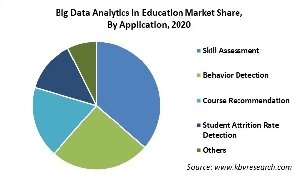
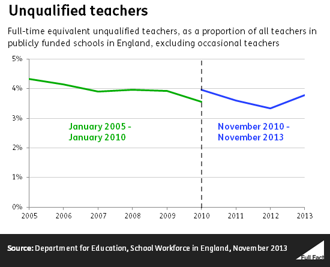
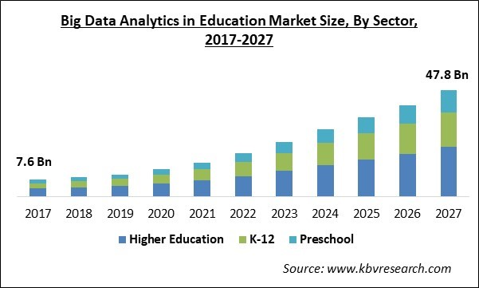

As we all learn and retain information in different ways having an education tailor made to your preferred way of learning could help to ensure that children thrive in their studies. Via data analytics, educators could find if their students are visual, auditory, reading/writing, or kinaesthetic learners and present each type of learner with a unique curriculum that will play to their strengths, as an example visual learners need less guidance but need the instructions to be repeated more than the other groups(Muhammad Mujtaba Mitra Zuana et al., 2023) [4] . Having an education that played to the students’ strengths could improve their abilities and could even be extended to tailor homework for each learning group.
Big Data Analytics in Education
Table from:
Analysis of test results could find where students are lagging behind their peers. By analysing their work, we can find where they’re falling behind by being able to see which kind of questions they routinely fail on or don’t get quite right. Such insights can allow teachers to laser in on such gaps in knowledge and fill them before they’re faced with vital, life altering exams(Ratcliffe, 2013) [5] . By taking tests on computers, you could even analyse how long it takes a student to answer a question. Insights like this could be used to find which questions are giving students problems then further investigation could discover whether it’s from something asinine such as the wording of the question, or more seriously, the content of the question. Analysis of such data would allow teachers to see which children are falling behind, catch them up, and make sure they achieve literacy and numeracy which is another UN target.
Unqualified Teachers in England (2013)
Table from:
The UN have found that, in 2020, over 14% of teachers are underqualified according to the national standard and unfortunately, this has been the case for many years(United Nations, 2023) [6] , and could be remedied by allowing governments to view the data on student attainment so they can pinpoint people who are unfit to be teaching. Unfortunately, there’s also a severe lack of teachers in certain areas so utilizing data analysis via predictive algorithms, such as linear regression, could be used to find where teachers are most needed in communities.
Market Size of Big Data Analytics in Education
Table from:
With all this data, students could benefit by readily being able to visualize their own competencies and weaknesses. Being able to visualize their achievements in such a way could empower them to seek further education that will build on their strengths or allow them to work on their weaknesses before they become a crutch. It’s been shown that self-affirmation can lead to greater educational outcomes(Matthew J. Easterbrook et al., 2021) [7] , so the ability to compare themselves and to see their own progress could have a cumulative effect on their grades. Another goal of the UN is to increase the number of youth who have relevant skills with information and technology, by incorporating data with their education they’ll no doubt pick up some concepts via osmosis, and what better piece of technology to learn than data analysis as in 2021 businesses spent $215 billion on big data(Rohit Amarnath, 2022) [8] .
This change to the education paradigm may seem over the top and expensive, especially for places with little money, but the money would quickly be earned back by having a qualified and educated workforce that can compete on the world stage and attract global capital. Some of the ideas may seem radical or unachievable but as the UN has said, to meet their goal “education systems must be re-imagined” and what better way than by utilizing cutting edge technologies before they’re obsolete.